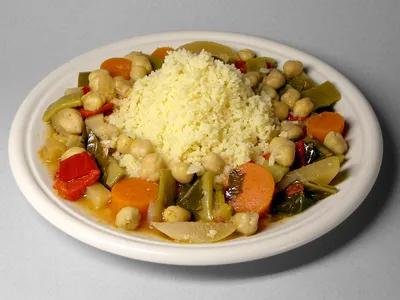

Description:
Couscous is a pasta-like dish of small steamed granules made from durum
wheat flour. It's a staple food in North Africa and is also popular in
France, Spain, Portugal, Italy, and Greece.
Ingredients:
- 1 ¼ teaspoons ground cumin
- ½ teaspoon ground ginger
- ¼ teaspoon ground cloves
- ⅛ teaspoon ground cayenne pepper
- ½ teaspoon ground cardamom
- ¼ teaspoon ground coriander
- ¼ teaspoon ground allspice
- 1 tablespoon olive oil
- 1 red onion, cut in half and thinly sliced
- 1 red, green, or yellow bell pepper, cut into 1-inch pieces
- 2 zucchinis, halved lengthwise and cut into ¾-inch pieces
- ½ cup golden raisins
- 1 teaspoon kosher salt
- grated zest of one orange
- 1 (14.5 ounce) can low-sodium chickpeas, rinsed and drained
- 1 ½ cups chicken broth
- ½ cup orange juice
- 1 ½ cups couscous
- 3 tablespoons chopped fresh mint
Steps:
-
Place a large, heavy bottomed pot over medium heat. Stir in cumin,
ginger, cloves, cayenne, cardamom, coriander, and allspice; gently
toast until fragrant, about 2 to 3 minutes. Stir in oil and onion,
cook until softened. Stir in bell pepper and zucchini; cook for 5
minutes. Stir in raisins, salt, zest, and chickpeas.
-
Pour in chicken broth and orange juice; turn heat to high and bring to
a boil. When the mixture is boiling, stir in couscous and remove from
heat; cover, and let stand 5 minutes. Fluff with a fork, and fold in
chopped mint.